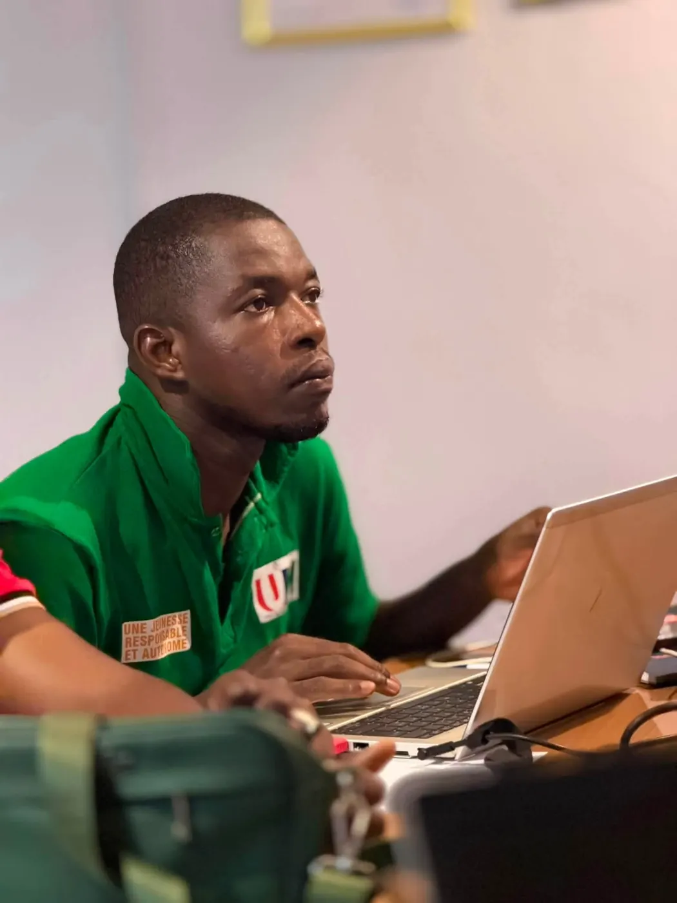
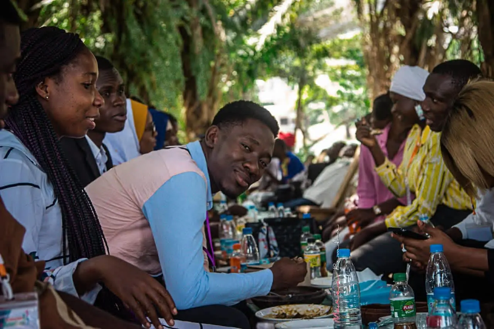

Employabilité et entrepreneuriat des jeunes
Formations, ateliers pratiques, mentorat et mise en relation avec les recruteurs, pour aider les jeunes à trouver un emploi ou à créer le leur.

Depuis 2019, l'Union des Jeunes Dynamiques de Man forme, accompagne et rassemble les jeunes pour qu'ils deviennent responsables, autonomes et acteurs du développement durable.

 Prochain rendez-vous3 · 4 · 5 décembre 2026J − 15 · 500 jeunes attendus à Man
Prochain rendez-vous3 · 4 · 5 décembre 2026J − 15 · 500 jeunes attendus à Man
« Entreprendre, s'employer et s'épanouir pour un avenir durable »
Nous rassemblons des jeunes femmes et des jeunes hommes autour d'une conviction simple : le développement de Man passe par sa jeunesse.


Créée le 21 décembre 2019 et officiellement légalisée le 7 mai 2021, l'Union des Jeunes Dynamiques de Man (UJDM) est une organisation de jeunesse basée à Man, dans la région du Tonkpi.
Elle œuvre pour le renforcement des capacités des jeunes, la promotion de l'entrepreneuriat, de l'éducation, du leadership citoyen, de l'égalité des chances et de la protection de l'environnement.
À travers ses actions, elle favorise la participation active des jeunes au développement de leurs communautés et encourage l'émergence d'initiatives innovantes qui répondent aux défis sociaux, économiques et environnementaux.

Six dates qui racontent l'UJDM.
Nos programmes s'articulent autour de trois axes stratégiques.
Formations, ateliers pratiques, mentorat et mise en relation avec les recruteurs, pour aider les jeunes à trouver un emploi ou à créer le leur.
L'autonomisation des filles et des femmes, la promotion de l'égalité des chances et la défense des droits humains.

La protection de l'environnement et des actions concrètes au service des communautés de Man et du Tonkpi.

En 2025, deux reconnaissances nationales pour notre travail.
Une distinction qui salue l'engagement de l'UJDM et la qualité de ses interventions.
Reçu lors du concours Impact Jeunes organisé par le Conseil National des Jeunes de Côte d'Ivoire (CNJCI).
Nos dernières rencontres, à Man.


Institutions, entreprises, organisations de la société civile, partenaires techniques et financiers : rejoignez-nous pour faire émerger une nouvelle génération de leaders, d'entrepreneurs et d'acteurs du changement.
Jeune de Man ou du Tonkpi, vous voulez vous engager ? Écrivez-nous ou appelez-nous.